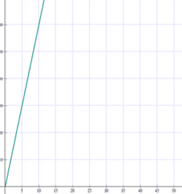
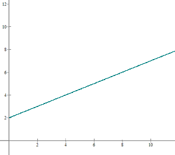
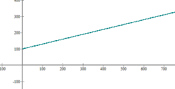
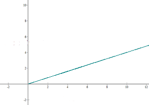
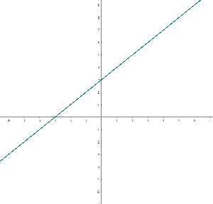

Linear Function Word Problems
1Three pounds of squid can be purchased at the market for $18. Determine the equation and represent the function that defines the cost of squid based on weight.
2It has been observed that a particular plant's growth is directly proportional to time. It measured 2 cm when it arrived at the nursury and 2.5 cm exactly one week later. If the plant continues to grow at this rate, determine the function that represents the plant's growth and graph it.
3A car rental charge is $100 per day plus $0.30 per mile travelled. Determine the equation of the line that represents the daily cost by the number of miles travelled and graph it. If a total of 300 miles was travelled in one day, how much is the rental company going to receive as a payment?
4When digging into the earth, the temperature rises according to the following linear equation:
t = 15 + 0.01 h.
t is the increase in temperature in degrees and h is the depth in meters. Calculate:
1. What the temperature will be at 100 m depth?
2.Based on this equation, at what depth would there be a temperature of 100 ºC?
5The pollution level in the centre of a city at 6 am is 30 parts per million and it grows in linear fashion by 25 parts per million every hour. If y is pollution and t is time elapsed after 6 am, determine:
1.The equation that relates y with t.
2. The pollution level at 4 o'clock in the afternoon.
6A faucet dripping at a constant rate fills a test tube with 0.4 cm³ of water every minute. Form a table of values for time and capacity, determine the equation and represent it graphically.
7For the function f(x)= ax + b, f(0) = 3 and f(1) = 4.
1. Determine the coefficients that satisfy the equation:
2. Write the equation and represent it graphically:
3. Indicate the intervals where the function has a positive and negative value.
1
Three pounds of squid can be purchased at the market for $18. Determine the equation and represent the function that defines the cost of squid based on weight.
18/3 = 6 y = 6x

2
It has been observed that a particular plant's growth is directly proportional to time. It measured 2 cm when it arrived at the nursury and 2.5 cm exactly one week later. If the plant continues to grow at this rate, determine the function that represents the plant's growth and graph it.
Initial height = 2 cm
Weekly growth = 2.5 − 2 = 0.5
y= 0.5 x + 2

3
A car rental charge is $100 per day plus $0.30 per mile travelled. Determine the equation of the line that represents the daily cost by the number of miles travelled and graph it. If a total of 300 miles was travelled in one day, how much is the rental company going to receive as a payment?
y = 0.3 x +100
y = 0.3 · 300 + 100 = $190

4
When digging into the earth, the temperature rises according to the following linear equation:
t = 15 + 0.01 h.
t is the increase in temperature in degrees and h is the depth in meters. Calculate:
1. What the temperature will be at 100 m depth?
t = 15 + 0.01 · 100 = 16 ºC
2.Based on this equation, at what depth would there be a temperature of 100 ºC?
100 = 15 + 0.01 h = 8,500 m
5
The pollution level in the centre of a city at 6 am is 30 parts per million and it grows in linear fashion by 25 parts per million every hour. If y is pollution and t is time elapsed after 6 am, determine:
1.The equation that relates y with t.
y = 30 + 25t
2. The pollution level at 4 o'clock in the afternoon.
10 hours have elapsed between 6 in the morning to four in the afternoon.
f(10) = 30 + 25 · 10 = 280
6
A faucet dripping at a constant rate fills a test tube with 0.4 cm³ of water every minute. Form a table of values for time and capacity, determine the equation and represent it graphically.
y =0.4 x
| Time | Capacity |
|---|---|
| 1 | 4 |
| 2 | 8 |
| 3 | 12 |
| 4 | 16 |
| ... | ... |

7
For the function f(x)= ax + b, f(0) = 3 and f(1) = 4.
1. Determine the coefficients that satisfy the equation:
f(0) = 3
3 = a · 0 + b b = 3
f(1) = 4.
4 = a · 1 + b a = 1
2. Write the equation and represent it graphically:
f(x) = x + 3

3. Indicate the intervals where the function has a positive and negative value.
x + 3 = 0 x = − 3
f(−4) = −1 < 0f(0) = 3 > 0
f(x) < 0 if x< −3
f(x) > 0 if x> −3